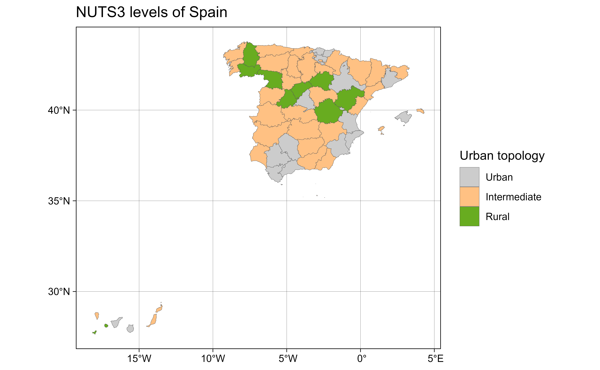

A sf object including all NUTS levels of Spain as provided by
GISCO (2016 version).
Format
A sf object (resolution: 1:1million, EPSG:4258) with
86 rows and columns:
- LEVL_CODE
NUTS level code (0,1,2,3)
- NUTS_ID
NUTS identifier
- URBN_TYPE
Urban Type, see Details
- CNTR_CODE
Eurostat Country code
ES- NAME_LATN
NUTS name on Latin characters
- NUTS_NAME
NUTS name on local alphabet
- MOUNT_TYPE
Mount Type, see Details
- COAST_TYPE
Coast Type, see Details
- FID
FID
- geometry
geometry field
Source
https://gisco-services.ec.europa.eu/distribution/v2/nuts/, file
NUTS_RG_20M_2016_4326.geojson.
Details
MOUNT_TYPE: Mountain typology:
1: More than 50 % of the surface is covered by topographic mountain areas.
2: More than 50 % of the regional population lives in topographic mountain areas.
3: More than 50 % of the surface is covered by topographic mountain areas and where more than 50 % of the regional population lives in these mountain areas.
4: Non-mountain region / other regions.
0: No classification provided
URBN_TYPE: Urban-rural typology:
1: Predominantly urban region.
2: Intermediate region.
3: Predominantly rural region.
0: No classification provided
COAST_TYPE: Coastal typology:
1: Coastal (on coast).
2: Coastal (less than 50% of population living within 50 km. of the coastline).
3: Non-coastal region.
0: No classification provided
See also
Other datasets:
esp_codelist,
esp_munic.sf,
esp_tiles_providers,
pobmun19
Other nuts:
esp_get_nuts()
Examples
data("esp_nuts.sf")
nuts <- esp_nuts.sf
# Select NUTS 3
nuts3 <- esp_nuts.sf[esp_nuts.sf$LEVL_CODE == 3, ]
# Combine with full shape
spain <- esp_get_country(moveCAN = FALSE)
# Plot Urban Type: See
# https://ec.europa.eu/eurostat/web/rural-development/methodology
library(ggplot2)
nuts3$URBN_TYPE_cat <- as.factor(nuts3$URBN_TYPE)
levels(nuts3$URBN_TYPE_cat)
#> [1] "1" "2" "3"
levels(nuts3$URBN_TYPE_cat) <- c("Urban", "Intermediate", "Rural")
ggplot(nuts3) +
geom_sf(aes(fill = URBN_TYPE_cat), linewidth = .1) +
scale_fill_manual(values = c("grey80", "#FFC183", "#68AC20")) +
labs(
title = "NUTS3 levels of Spain",
fill = "Urban topology"
) +
theme_linedraw()
